几何画板基础入门教程
作者：TeliuTe 来源：基础教程网
二、画直线、线段、射线、直线 返回目录 下一课使用线条工具，可以很方便地画出线段、射线、直线，进而画出线条组成的图形；
1、线段
1）打开几何画板，在左边工具箱，选中画线工具；
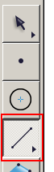
2）将鼠标移至右边工作区，按住不松手，就可以拉出一条线段来，按住Shift键可以画一条直线来；
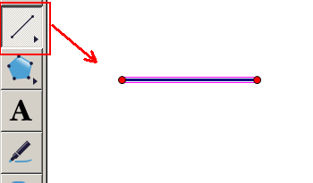
3）将鼠标瞄准左边的点，变大后按住向上再画一条线；
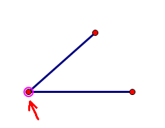
4）同样再瞄准上面的点，向下与第三个点重合，就可以画出一个三角形来，保存一下文件；
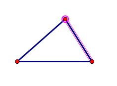
2、射线
1）在左边工具箱，按住画点工具，右边出现一排按钮，选第二个“射线”，图标是单箭头；
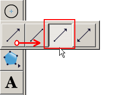
2）将鼠标移至右边工作区，按住不松手，就可以拉出一条射线来，按住Shift键可以画一条直线来；
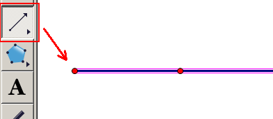
3）射线是由两个点确定的，一个是顶点，另外一个控制方向，用选择工具，移动第二个点，可以改变射线的方向，
如果画错了，没松手前，按ESC键取消，松开鼠标了，按Ctrl+Z组合键撤销，编辑菜单里也有；
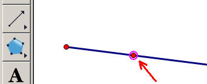
4）将鼠标瞄准左边的顶点，变大后按住向上再画一条射线，从而画出一个角来，保存一下文件；
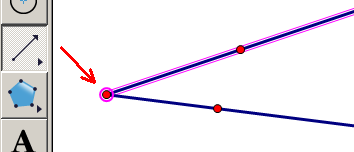
3、直线
1）在左边工具箱，按住画点工具，右边出现一排按钮，选第三个“直线”，图标是双箭头；
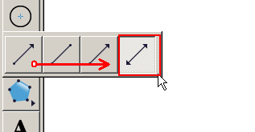
2）将鼠标移至右边工作区，按住不松手，就可以拉出一条直线来，按住Shift键可以画一条水平或垂直的直线；
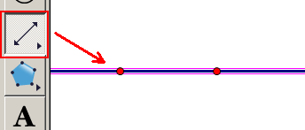
3）直线是由两个点确定的，一个点是固定位置，另外一个控制方向，移动第二个点，可以改变直线的方向；
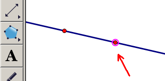
4）按住Shift键，画两条水平的直线，保存一下文件；
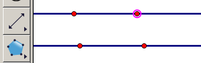
本节学习了画线段、射线、直线的基础知识，如果你成功地完成了练习，请继续学习下一课内容；
本教程由TeliuTe制作|著作权所有
基础教程网：http://teliute.org/
美丽的校园……
转载和引用本站内容，请保留作者和本站链接。